RAG、Agent、Wiki 三合一：腾讯开源的知识库 WeKnora 暴涨star
来源：微信公众号 归档日期：2026-09-19 抓取状态：成功 原文字符：5930｜配图：11 张
摘要速览
- 摘要 团队资料散在飞书、语雀、GitLab，问 AI 答不准，想让 Agent 干活又不敢开权限，整理好的知识还越放越旧。腾讯开源的 WeKnora 把 RAG 问答、Agent 推理和自动 Wiki 装进同一个知识库，一个框架解决三件事。这篇讲清它怎么运作、v0.8.0 做了哪些取舍，以及上手前必须知道的风险。
核心内容
（待补充）
可执行启发
（待补充）
我的想法
（待补充）
原文沉淀
来源：https://mp.weixin.qq.com/s/C06VC_u8ThxoX65GZXD98A 平台：weixin｜作者：每日学AI 抓取方式：cdp｜字符数：7764｜图片：11
摘要 团队资料散在飞书、语雀、GitLab，问 AI 答不准，想让 Agent 干活又不敢开权限，整理好的知识还越放越旧。腾讯开源的 WeKnora 把 RAG 问答、Agent 推理和自动 Wiki 装进同一个知识库，一个框架解决三件事。这篇讲清它怎么运作、v0.8.0 做了哪些取舍，以及上手前必须知道的风险。
你搭过一个团队知识库就会知道，最难的其实不是让 AI 回答问题。
难的是三个月后：当初零散丢进去的文档，慢慢变成一堆没人敢更新、也没人知道哪条还准的过期材料。问答每天都在用，知识本身却在腐烂。
腾讯微信团队开源的 WeKnora 想解决的就是这一层。它的官方 slogan 很直白：帮你找到答案，并将知识付诸实践。
截至 2026 年 9 月 18 日，这个仓库有 26.8K star、3.6K fork。一个月前，它还是 1.95 万 star 左右——这个增速在工具类开源项目里算快的。
官方 README 里还有一句分量很重的话：它是微信对话开放平台背后的核心技术框架。这至少说明它不是一份实验室里的演示代码。
它是什么：一个知识库，三种用法
大多数开源 RAG 项目解决的是"能不能答对"。WeKnora 的定位是"答完之后怎么办"。它把三种能力放在同一个知识库上。
↓ 一图看懂它的整体结构
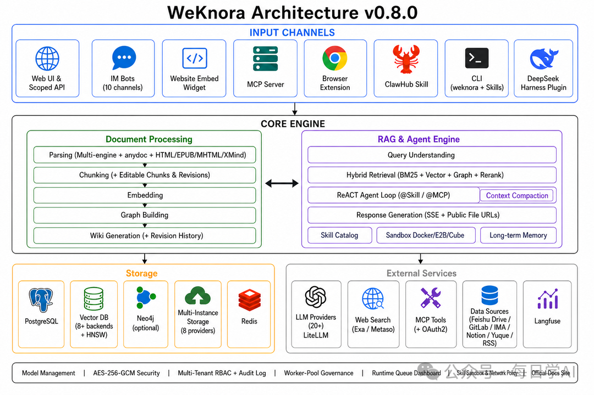
WeKnora v0.8.0 架构：输入渠道 / 核心引擎 / 存储 / 外部服务
01 · RAG 问答：日常查资料
混合检索（关键词 BM25 + 语义稠密检索）、GraphRAG、父子分块都用上了，向量检索走 HNSW 加速的 pgvector；回答带来源引用，能打开原文核对。
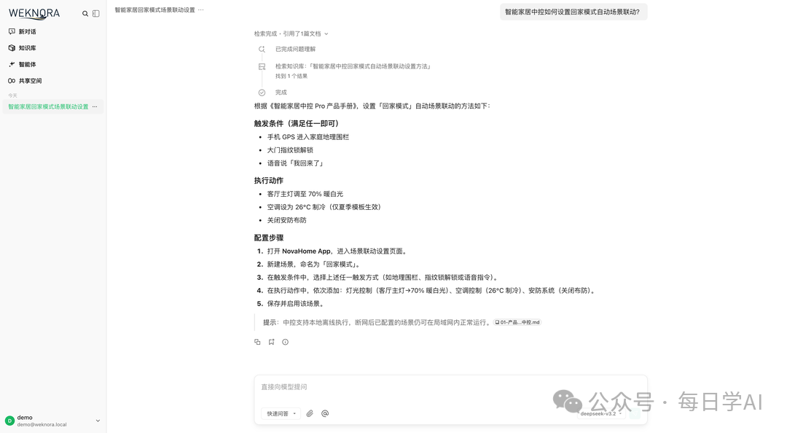
智能问答：回答带引用，可打开原文核对
02 · ReAct Agent：处理多步任务
Agent 自己编排知识检索、MCP 工具、技能和网络搜索，在沙箱里读写文件、跑脚本。
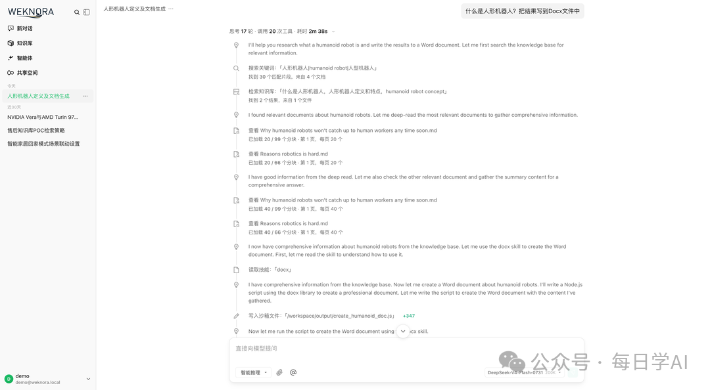
Agent 模式：检索知识库 → 读取技能 → 写沙箱脚本
03 · 自动 Wiki：把知识沉淀下来
Agent 把原始文档提炼成互相链接的 Markdown 知识库，配一张可交互的知识图谱，支持浏览器内编辑、修订历史、行级 diff 和一键回滚。
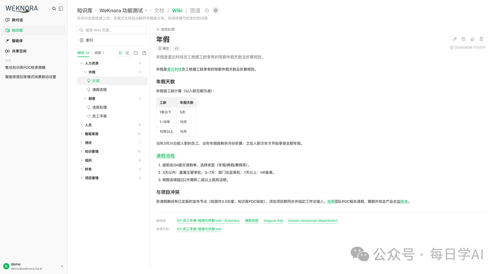
Wiki 浏览器：自动生成的互链知识页
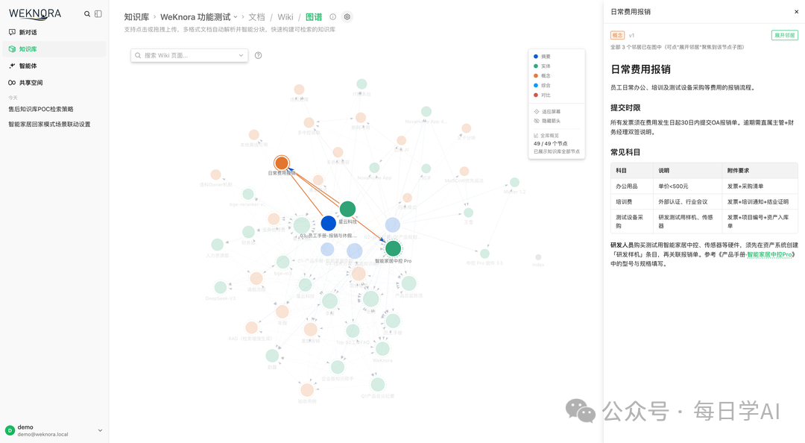
交互式知识图谱：看到知识之间的关联
三种能力共享同一个知识库，这一点是关键。你在问答里确认过的结论，可以直接沉淀进 Wiki；Wiki 里的页面，又能被下一轮检索调用。知识不是只进不出的黑洞。
知识治理这一层它也没省。上传时保留原始目录结构，侧栏是树形文件夹视图，文件可以重新归档；检索分块能直接在界面里编辑，改完有版本快照和 diff，不满意一键回滚；文档还能挂自定义元数据，解析后自动匹配知识库里已有的标签。
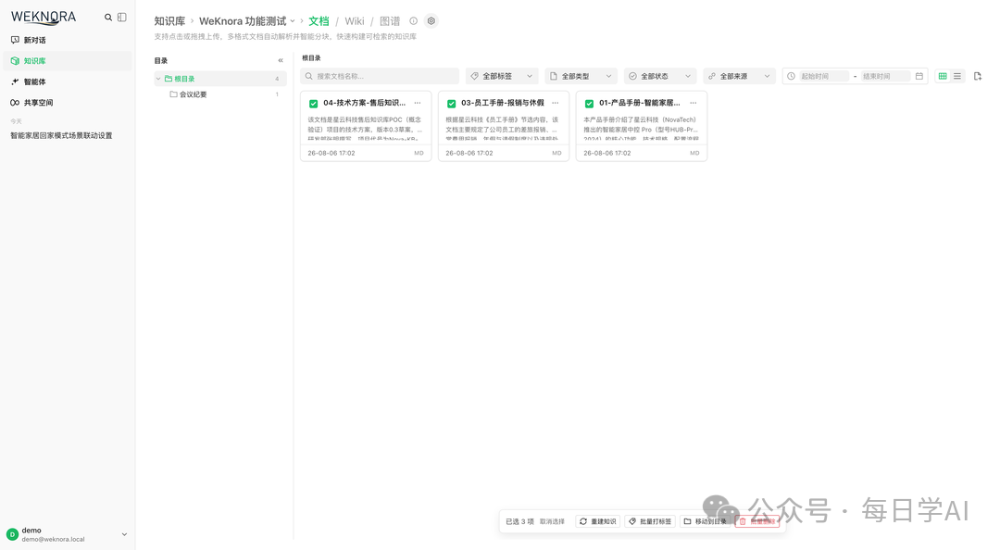
树形文件夹视图：保留上传时的目录结构
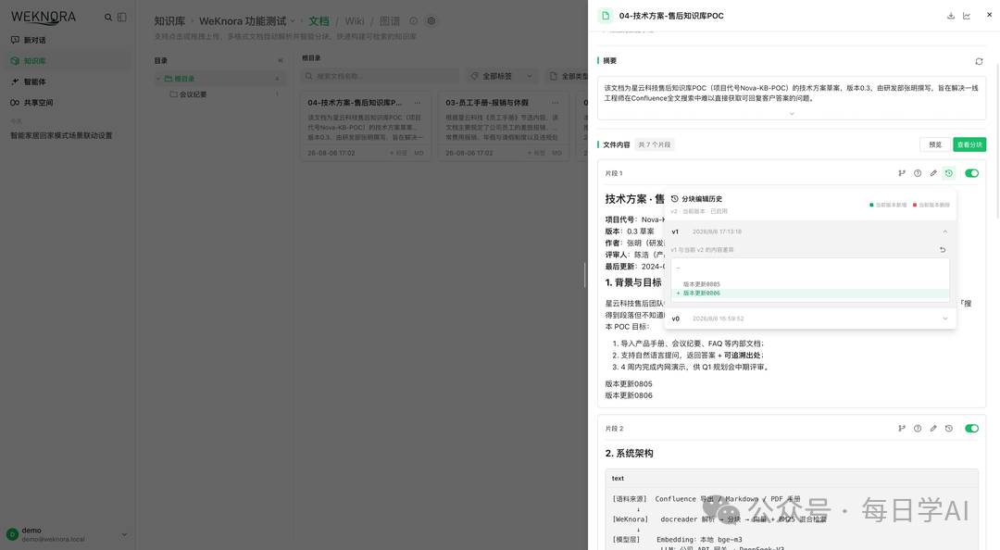
分块编辑 + 修订历史：检索片段也能像文档一样 diff 和回滚
这些东西看着琐碎，但决定了一个知识库长期用下来会不会失控。
为什么"自动 Wiki"这件事不常见
把这三种能力排一下序就明白了。
做第一层（RAG 问答）的项目很多，开源方案一抓一把；做第二层（Agent 推理）的少一些，而且通常会引入一个尴尬：Agent 要干活就得有权限，直接操作宿主机又是企业最不能接受的；做到第三层（自动 Wiki）的，目前在这条赛道里确实少见。
原因不难理解。让模型"生成一份文档"很容易，难的是这份文档要可维护——有版本、能回滚、能追溯改了什么、错了能退回上一版。
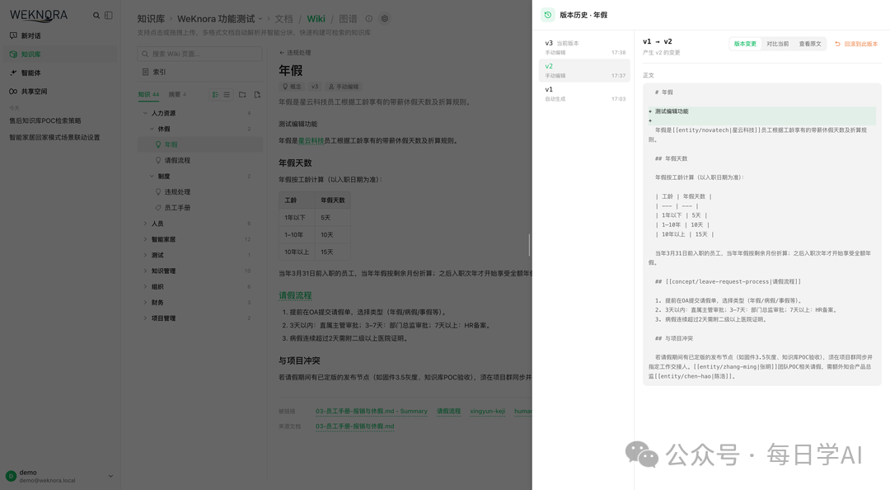
Wiki 页面的修订历史与一键回滚
WeKnora 把版本快照、diff 和一键回滚做进了 Wiki 的常规操作里，这是它和"让 AI 写一篇总结"之间最根本的差别。它其实是把 AI 生成的内容，当成了需要版本管理的生产资产，而不是一次性的输出。
做过内容治理的人都懂：知识库最难的不是答对，是别烂。这句话听着像运营问题，其实是个工程问题。
v0.8.0 的取舍：为了安全，主动关掉便利
最新版本 v0.8.0（GitHub Releases 记录为 2026 年 9 月 3 日）最值得看的不是新增了什么，而是它默认关闭了什么。
技能执行搬进了会话级沙箱，提供 Docker、E2B、Cube 三种后端。同一个会话里的多轮任务共用一个沙箱工作区，脚本执行、文件读写、产物收集都落在同一个 workspace，生成的文件可以在对话里直接预览和下载。
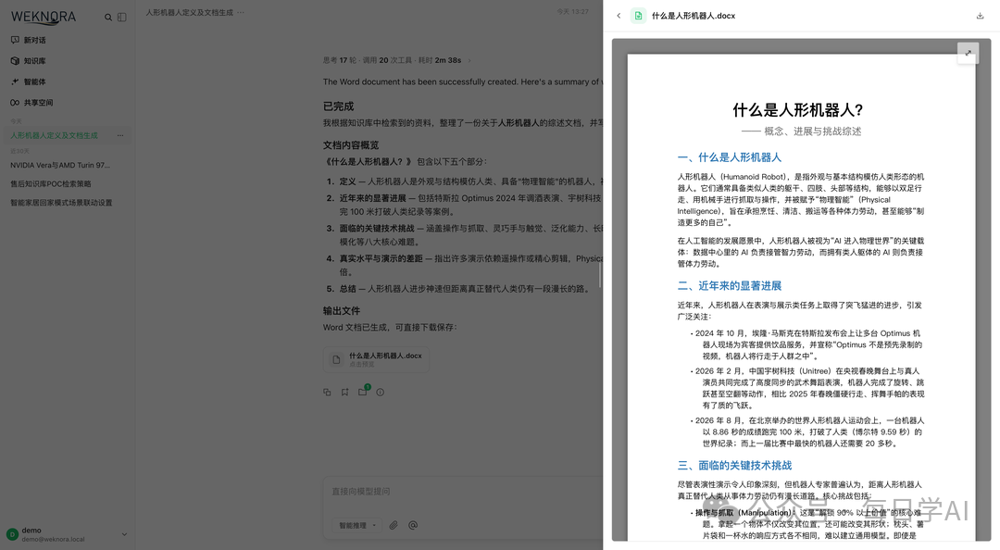
沙箱里生成 Word 文件，在对话中直接预览
配套的三个动作更能说明态度：
1.本地宿主进程后端被移除。Agent 不再有"直接在你机器上跑"的选项。
2.Docker 后端默认关闭，需要显式开启。
3.默认拒绝出网，按租户配置网络策略。
技能本身也有了正经的来源管理：工作区的技能目录支持从 ClawHub、SkillHub、Git 仓库或 ZIP 包安装，带实时安装进度、按沙箱快照，技能文件可以在界面里浏览和编辑，还支持个人和工作区两级环境变量。
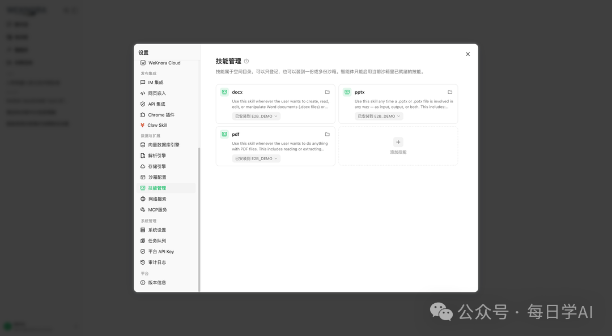
技能目录：把技能装到沙箱里复用
同一版里，跨会话长期记忆上线了，分成画像、偏好、事实、任务、兴趣五类，自动提取后需要你确认才生效，也可以随时管理或关闭。这个"要用户点头"的设计，和上面那套收紧的默认值是同一种思路。
另外还有一批工程细节值得记一笔：上下文压缩、适配各家服务商的 prompt 缓存标记、对话产物与问题大纲、文档自动打标签、OIDC 的 JWKS 验证、可选的强密码策略，以及 Exa 和 Metaso 两个新的联网搜索源。
ℹ️ 一句话总结 它把"Agent 能干什么"这个权限问题，换成了"Agent 被隔离在哪"的工程问题。代价是开箱即用的门槛变高了——但这个交换，对要在企业里跑 Agent 的团队来说，方向是对的。
接入面：它几乎不挑你的技术栈
• 模型 20+ 家，OpenAI、Azure OpenAI、Anthropic、DeepSeek、通义千问、智谱、混元、豆包、Gemini、MiniMax、Ollama、LiteLLM、OpenRouter 等都能接
• 向量库 PostgreSQL（pgvector）、Elasticsearch、OpenSearch、Milvus、Weaviate、Qdrant、Apache Doris、腾讯 VectorDB，八种可选
• 对象存储 本地、MinIO、AWS S3、火山 TOS、阿里云 OSS、金山云 KS3、华为云 OBS，还能按工作区配置多个存储实例
• IM 渠道 企业微信、飞书、Lark、QQBot、Slack、Telegram、钉钉、Mattermost、微信、云之家
• 数据源 飞书 Wiki / Drive、GitLab、腾讯 IMA、Notion、语雀、钉钉文档、RSS 自动同步，支持增量
• 文档格式 PDF、Word、Txt、Markdown、HTML、EPUB、MHTML、图像、CSV、Excel、PPT、JSON、XMind；Office 文件由 anydoc 在进程内解析，不用另起一个转换服务
对外还提供 RESTful API、CLI（weknora，默认输出稳定 JSON，方便脚本和 Agent 调用）、Chrome 扩展、微信小程序，以及官方 MCP Server——PyPI 上的 tencent-weknora-mcp，29 个工具，支持 stdio / SSE / HTTP 三种传输。
想把问答能力发布到外部网站，可以用官方的嵌入组件，配域名白名单和速率限制；面向程序化集成，它提供作用域 API key——能限定能力范围和可访问的知识库，带限流，还能追踪最后使用时间。
它还把一份技能发布到了 ClawHub（第三方技能平台）。装上之后，Agent 可以直接通过 REST API 干三件事：文档导入（文件 / URL / Markdown）、跨知识库混合检索（向量 + 关键词）、知识条目的列表浏览与增删改。
企业关心的那部分也没落下：工作区四级 RBAC（Owner / Admin / Contributor / Viewer）、按知识库的资源归属、按工作区审计日志、API key 与凭证 AES-256-GCM 静态加密、集成 Langfuse 追踪 Agent 的推理循环与 token 消耗。系统管理员另有一个运行时任务队列仪表盘，能看到各阶段 worker 池的负载情况。
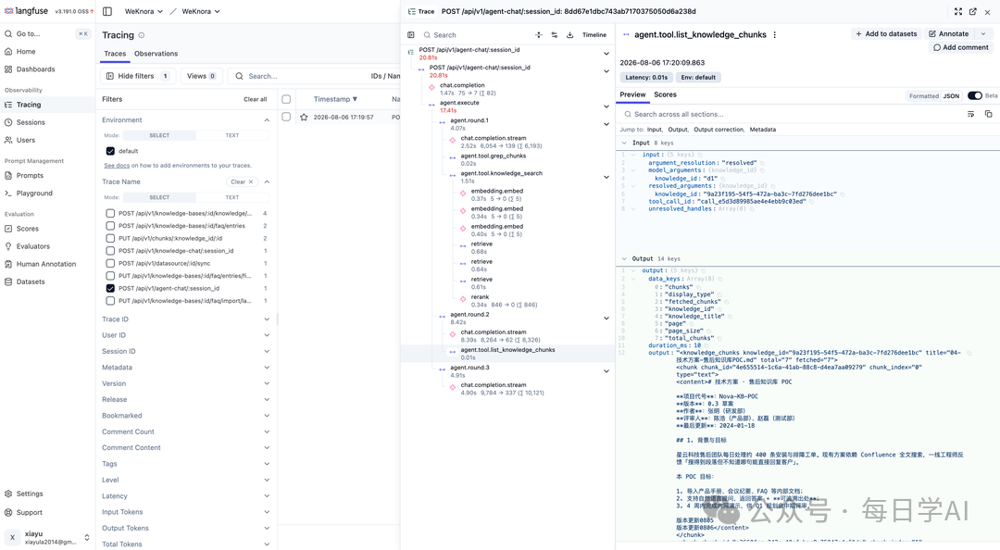
内置 Langfuse 追踪：推理循环、token 与流水线全程可视
最后是部署侧的一句话：模型、向量库、存储后端都能替换，所以它既能跑在本地，也能进私有云，数据不出你的环境——官方把这叫做"完整的数据主权"。
三种模式，什么场景用哪个
| 模式 | 什么时候用 | 典型场景 |
|---|---|---|
| RAG 问答 | 要快、准、有出处 | 查配置项含义、翻规章制度 |
| ReAct Agent | 要多步、跨源、要动手 | 对比三份方案、抓网页汇总 |
| 自动 Wiki | 要留下的东西别烂掉 | 整理散落文档、建知识地图 |
一句话原则：日常问答用 RAG，复杂任务用 Agent，整理沉淀用 Wiki。三者共用一个知识库，不用来回导数据。
上手：三条命令，或者干脆不部署
自己部署的话，前置只要有 Docker 和 Git：
BASH
git clone https://github.com/Tencent/WeKnora.git
cd WeKnora
cp .env.example .env
docker compose pull
docker compose up -d
跑完打开 http://localhost 就是完整界面。需要知识图谱、对象存储、追踪这些可选组件时，用 compose profile 按需开启：
BASH
docker compose --profile neo4j --profile minio --profile langfuse up -d
不想折腾部署的，可以用官方在微信生态里提供的线上版本（在官网 weknora.weixin.qq.com 可以找到入口），扫码就能试。开发模式也留了口子：make dev-start、make dev-app、make dev-frontend，支持前端热重载和 IDE 断点。
但有几件事必须提前知道
01 · v0.8.0 关联 10 个已知 CVE
据第三方发布追踪站点记录，这个版本受 10 个已知漏洞影响；翻一下历史，从 v0.3.0 起的多个版本也都被标记过。
⚠️ 注意你必须跟着版本走，不能部署完就不管。生产环境请按官方建议：部署在内网、不要直接暴露公网、配好防火墙和访问控制。
02 · Docker 沙箱有个绕不开的代价
根据相关资料，Docker 沙箱需要手动开启，而且要挂载 docker.sock——这基本等同于把宿主机的 root 权限交出去。官方的收紧默认值把风险关小了，但你要自己开的那扇门，得自己评估。另外，图形桌面功能只在 E2B 和 Cube 这两种后端上支持，Docker 后端没有。
03 · 它是"大而全"路线
完整的形态对企业是加分，对小团队或个人就是负担——组件多、配置项多、上手成本实打实。功能诉求和迭代压力，也直接写在它的 issue 区里。
04 · 它的迭代节奏需要你跟上
44 个 release、平均一周多一版，意味着接口和行为可能持续变化。想在生产用，建议锁版本、看 changelog，别盲目追新。
写在最后
回到开头那个问题：知识库最难的不是答对，是别烂。
这句话听着像运营问题，其实是个工程问题——知识有没有版本、能不能回滚、改了什么能不能查到。WeKnora 的自动 Wiki 之所以值得单独拿出来说，就是因为它把这件事做成了系统能力，而不是一句"请定期维护"的提醒。
大模型让"检索"这件事的差距在快速缩小。接下来拉开距离的，会是"治理"：谁能把 AI 生成的东西管好、能追溯、敢回退，谁的知识库才活得久。
想试的话，最省事的路径是先上线上版本摸一遍功能，等你确定要认真用了，再回头啃 Docker 部署。
项目地址 GitHub：https://github.com/Tencent/WeKnora 官方网站：https://weknora.weixin.qq.com 文中数据截至 2026-09-18。star 数、版本号这类实时信息以仓库最新页面为准。
END
— 谢 · 谢 · 观 · 看 —
如果本文对你有帮助，点个赞 + 在看，是对我最大的鼓励 ❤️
关注我，每日学AI，每天进步一点点
这里有 AI 前沿 · 开源一线 · 实战教程
归属：[[02-输入/按主题/工具与技术/_index|工具与技术]]